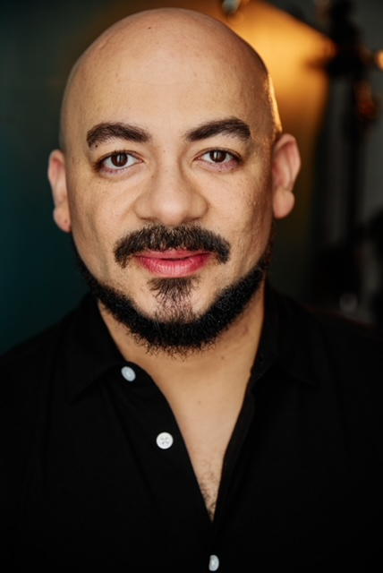
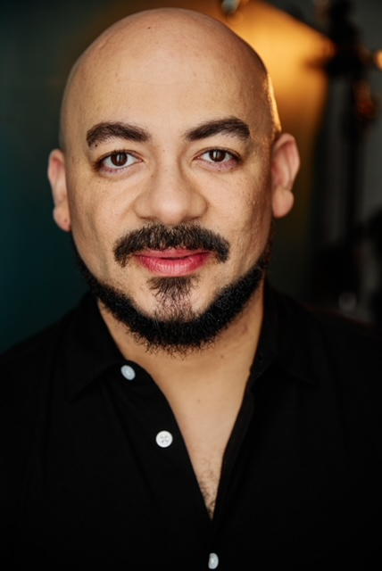

Frank Britton (he/him/his) is a Helen Hayes Award-winning actor and instructor who has been a part of the Washington DC / DMV professional theatre scene for the past 19 years. A native of DC and raised in both DC and Hyattsvillle, MD, he began his training in a three-month weekend class at the Shakespeare Theatre Company, then almost immediately after enrolled in The National Conservatory of Dramatic Arts’ two-year conservatory program, from which he graduated in 2001.
He has appeared on professional stages all over the Potomac/DMV region, as well as around the country, in NYC (LaMaMa ETC), Richmond, VA (Firehouse Theatre), Williamsburg, VA (Virginia Shakespeare Festival), Cincinnati (Cincinnati Playhouse in the Park), and Milwaukee (Milwaukee Repertory Theater).
He has appeared on professional stages all over the Potomac/DMV region, as well as around the country, in NYC (LaMaMa ETC), Richmond, VA (Firehouse Theatre), Williamsburg, VA (Virginia Shakespeare Festival), Cincinnati (Cincinnati Playhouse in the Park), and Milwaukee (Milwaukee Repertory Theater).